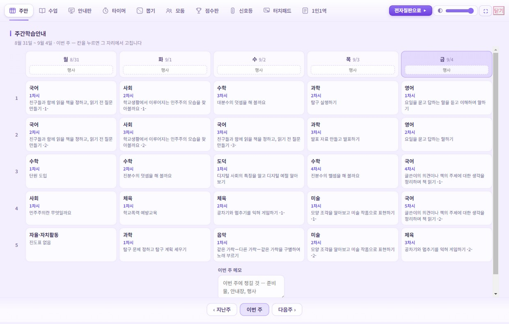
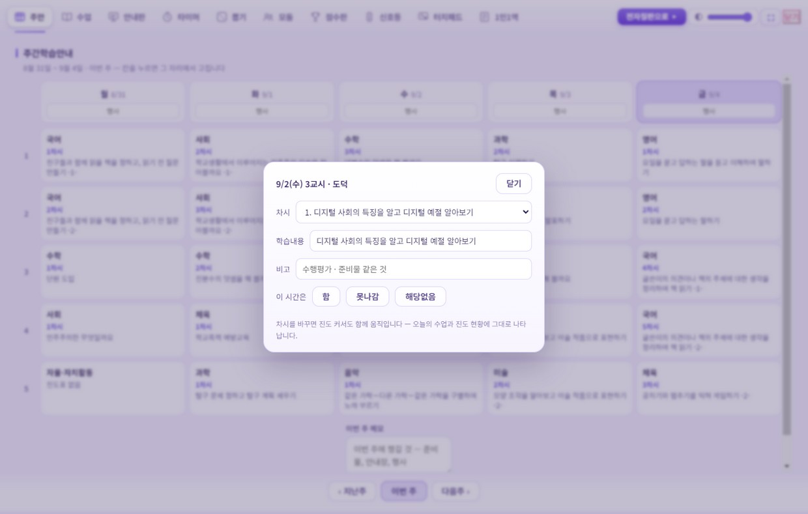
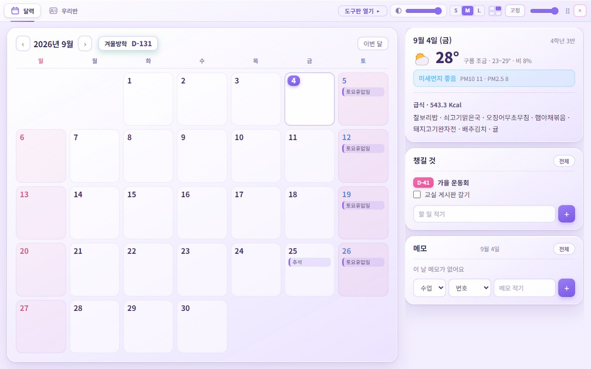
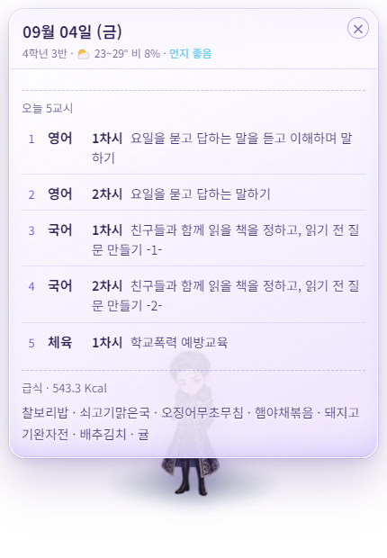
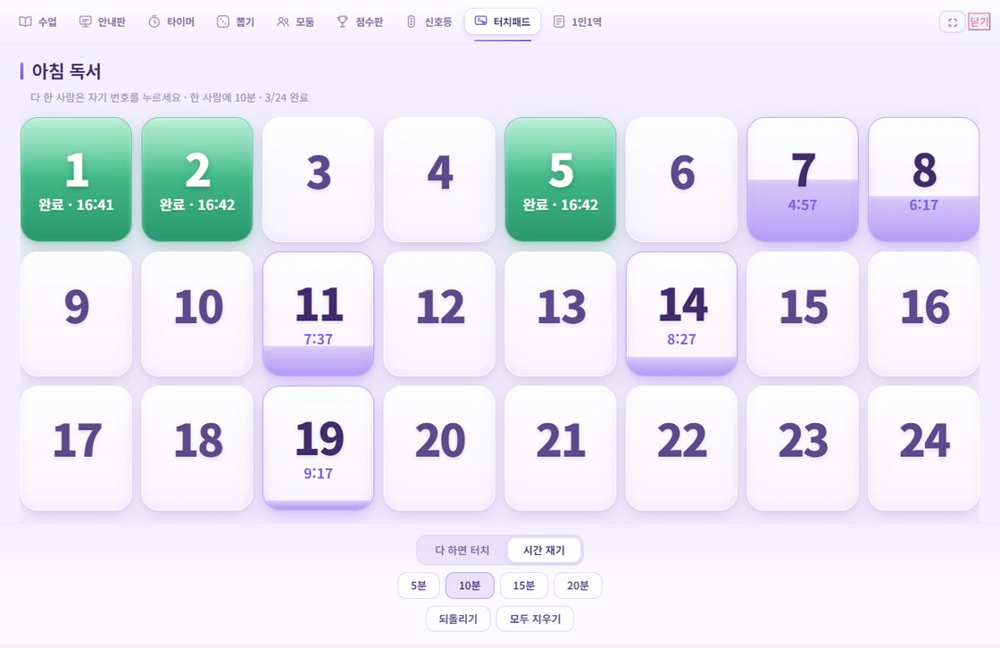
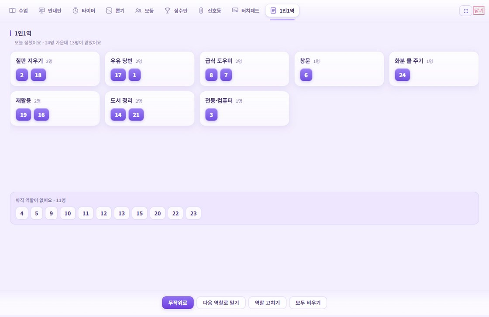
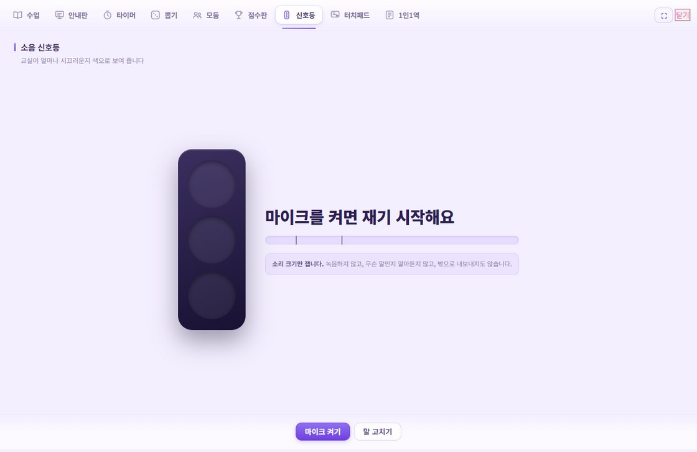
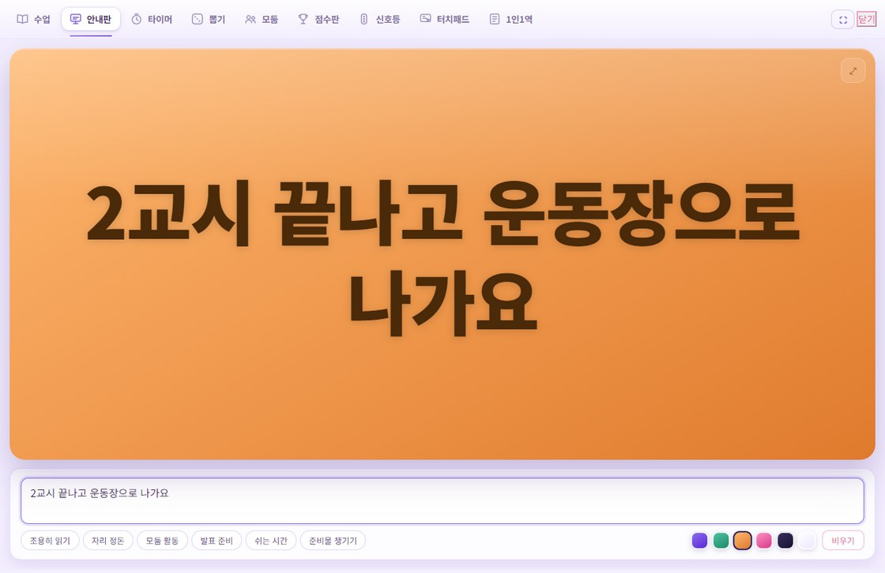
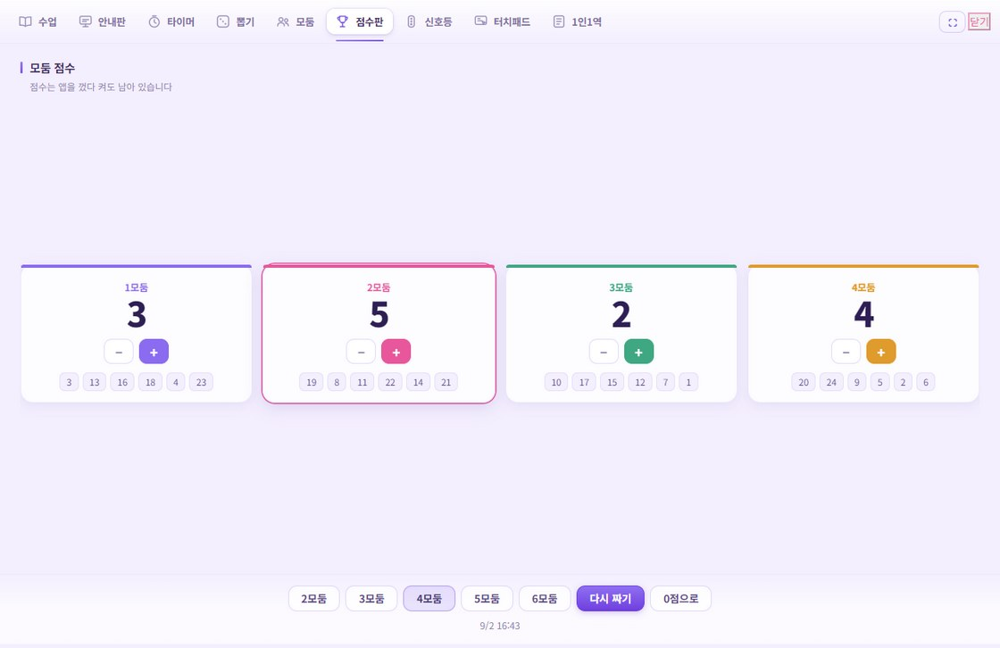
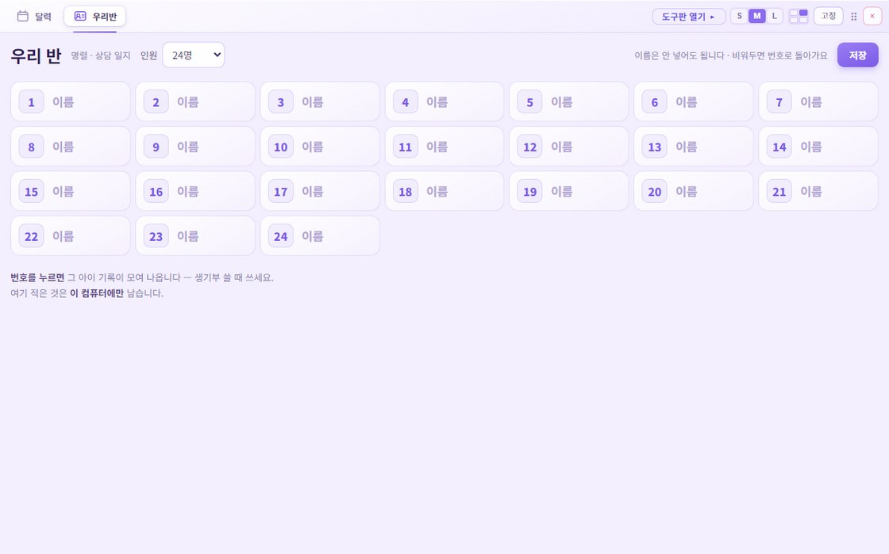

수업 준비의 절반은
이미 어딘가에 적혀 있습니다
시간표는 나이스에, 차시와 학습주제는 학년 교육과정 문서에 있습니다. 무무요정은 그것을 찾아다 오늘 자리에 놓아 줍니다. 지어내는 것은 없습니다.

왜 쓰나
시간표·급식·학사일정은 나이스에서, 차시와 학습주제는 학년 교육과정 운영 계획 PDF에서 그대로 가져옵니다. 손으로 옮겨 적을 일이 없습니다.
학교 문서와 나이스에서 온 것만 보여 줍니다. 그럴듯한 문장을 만들어 내는 기능은 아예 들어 있지 않습니다. 틀리면 원본이 틀린 것입니다.
바탕화면 층에 박아 두면 한글이나 인터넷 창 뒤로 들어갑니다. 그 위에 폴더와 아이콘을 그대로 올려놓을 수 있습니다.
주간학습안내
주초에 한 번, 한 주를 그릴 때
시간표를 읽어 한 주를 차례로 걸으면서 과목마다 차시를 하나씩 밉니다. 월요일 국어가 1차시면 수요일 국어는 3차시로 — 그게 「오늘 다섯 교시」와 「이번 주 계획」의 차이입니다.
칸을 누르면 그 자리에서 차시·학습내용·비고를 고칩니다. 차시를 바꾸면 진도 커서까지 함께 움직여서, 오늘의 수업과 진도 현황에 그대로 나타납니다. 주안만 따로 노는 종이가 되지 않습니다.
지난 날은 실제로 한 기록을, 앞날은 밀어 본 계획을 보여 줍니다. 한 시간을 마치면 그 칸에서 바로 「함」을 눌러 둡니다 — 하루 끝에 따로 화면을 열 일이 없습니다.

달력
켜 놓고 하루 종일
학사일정 · 방학 D-day · 날씨와 미세먼지 · 급식 · 할 일 · 메모를 한 화면에 둡니다. 바탕화면 층에 박으면 벽지와 아이콘 사이에 들어가서 아무 창도 가리지 않습니다.

오늘 한눈에
아침에 한 번
요정을 누르면 오늘 것을 모아서 폅니다 — 시간표, 급식, 날씨와 미세먼지, 그리고 오늘 챙길 것. 교시 시작 2분 전에는 다음 시간 과목과 준비물을 미리 알려 줍니다.

터치패드
아침 독서 · 과제 확인 · 활동 마무리
전자칠판에 띄워 놓으면 다 한 아이가 나와서 자기 번호를 누릅니다. 명렬표를 들고 한 명씩 부르던 일을 아이들이 스스로 합니다.
시간 재기로 놓으면 누른 사람마다 거기서부터 정해진 시간이 갑니다. 반 전체가 같이 재는 것이 아니라, 늦게 시작한 아이도 제 몫의 10분을 온전히 갖습니다.

1인1역
학기 초, 그리고 달마다 한 번
역할을 직접 만들고 무작위로 나누거나 다음 역할로 밉니다. 무작위는 지난번과 같은 역할을 피해서 나눕니다 — 그냥 섞으면 꼭 누군가 같은 역할을 또 받고, 아이들은 그걸 바로 알아챕니다.

소음 신호등
모둠 활동 · 자습 시간
교실이 얼마나 시끄러운지 색으로 보여 줍니다. 교실마다 시끄러운 정도가 다르니 기준도, 아이들에게 보일 말도 반에 맞게 바꿉니다.
소리 크기만 잽니다. 녹음하지 않고, 무슨 말인지 알아듣지 않고, 화면을 떠나면 마이크를 놓습니다.

안내판
전달 사항이 있을 때
적으면 칠판에 크게 뜹니다. 글자 수에 따라 크기가 알아서 맞춰지고, 화면 가득으로 켜면 뒷자리에서도 읽힙니다.

타이머 · 뽑기 · 모둠 · 점수판
수업 중 아무 때나
타이머는 남은 시간이 고리로 줄어들어 교실 뒤에서도 읽힙니다. 뽑기는 한 번 뽑힌 사람을 뒤로 미뤄 골고루 돌아가게 하고, 모둠은 누를 때마다 새로 섞습니다. 모둠 점수는 앱을 껐다 켜도 남습니다.

상담 일지
상담하고 난 직후
아이 번호를 누르면 그 아이 기록만 학기별로 모여 나옵니다. 그 자리에서 한 줄 적고, 생기부 쓸 때 글로 복사해서 그대로 붙입니다.
학생 이름은 안 넣어도 됩니다. 비워 두면 번호로 돕니다 — 뽑기도 모둠도 1인1역도 번호만으로 돌아갑니다.

무무키오스크와 이어집니다
수업 중에 학습앱을 바로 열 때
혼자 크는 도구가 아닙니다. 무무클래스가 만들어 온 학습앱들과 한 몸으로 움직입니다.
요정을 누르면 펼쳐지는 부채꼴의 첫 칸이 무무.life 입니다. 아이들이 여는 학습앱 모음이라 수업 중에 가장 자주 눌리는 자리를 줬습니다. 이 칸만은 바꿀 수 없습니다.
학년 → 과목 → 단원 → 차시로 파고들면, 그 차시에 맞는 학습앱이 함께 나옵니다. 누르면 바로 열립니다. 4학년 1학기에만 마흔넷이 걸려 있습니다.
진도표가 없는 학년도 앱은 나옵니다. 교육과정 PDF를 아직 안 넣었어도 학년만 고르면 그 학년에 걸린 학습앱을 바로 쓸 수 있습니다.
지켜지는 것
적은 것은 그 컴퓨터에만 남습니다. 학생 이름도 상담 기록도 어디로도 보내지 않습니다. 서버가 없습니다.
지어내는 것이 없습니다. 학교 교육과정 문서와 나이스에서 온 것만 그대로 보여 줍니다.
마이크는 소리 크기만 잽니다. 녹음하지 않고, 무슨 말인지 알아듣지 않고, 화면을 떠나면 놓습니다.
학생 이름은 안 넣어도 됩니다. 비워 두면 번호로 돕니다.
받기
서명하지 않은 프로그램이라 윈도우가 파란 화면으로 한 번 막습니다. 「추가 정보」 → 「실행」을 누르면 됩니다. 개인이 만든 프로그램은 다 이렇게 뜹니다.
| FILE | 쓰는 법 |
|---|---|
| MumuSuupDoumi-0.4.0-win-x64.exe | 설치본. 관리자 권한이 필요 없고 바탕화면 바로가기가 생깁니다. |
| MumuSuupDoumi-0.4.0-portable.exe | 설치 없이 실행. 학교 컴퓨터에 설치가 막혀 있을 때. |
자주 묻는 것
처음 켜면 무엇부터 해야 하나요
요정을 마우스 오른쪽 단추로 누르고 설정에서 학교를 검색해 고른 다음, 학년과 반을 넣습니다. 여기까지가 처음 한 번 할 일입니다.
나이스 인증키가 꼭 있어야 하나요
없어도 됩니다. 다만 인증키가 없으면 하루 5교시까지만 옵니다 — 6교시 있는 날은 잘립니다. open.neis.go.kr 에서 무료로 발급받아 설정에 넣으면 풀립니다.
진도표는 어떻게 넣나요
학년 교육과정 운영 계획 PDF를 고르면 「3) 교과 및 평가 운영 계획」 표에서 단원·차시·성취기준·수업 주안점·평가 기준을 그대로 가져옵니다. 학교마다 문서가 달라서 함께 담아 드리지는 못합니다.
진도표가 없어도 타이머·뽑기·모둠·점수판·터치패드·1인1역·안내판은 그대로 씁니다.
어떻게 끄나요
요정을 우클릭하면 나오는 물음 아래쪽에 「무무요정 끄기」가 있습니다. 숨겨 두었을 때는 화면 가장자리 메뉴 줄 맨 아래에 「끄기」가 있습니다. 둘 다 두 번 눌러야 꺼집니다.
업데이트는 어떻게 하나요
새 설치 파일을 받아 그대로 실행하면 위에 덮어씌워집니다. 설정·진도·메모·상담 기록은 따로 보관되어 지워지지 않습니다. 설치 전에 앱을 먼저 끄는 편이 안전합니다.
전자칠판이나 두 번째 모니터에 띄우려면
도구판은 달력과 다른 창이라 그쪽으로 옮겨 놓을 수 있고, 한 번 옮기면 그 자리를 기억합니다. 탭 줄의 「전자칠판으로」를 누르면 한 번에 옮기고 화면을 채웁니다.
건의함
쓰다가 불편했던 것, 있었으면 하는 것을 적어 주세요. 선생님이 쓰는 교실과 제가 쓰는 교실이 달라서, 말해 주지 않으면 모릅니다.